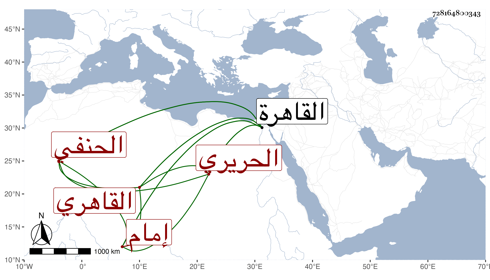

0902Sakhawi.DawLamic.ITO20230111-ara1.EIS1600.728164800343
Biography ID: 728164800343
376
محمد بن محمد بن علي بن صلاح المجد أبو الفتح بن الشمس القاهري الحنفي إمام الصرغتمشية وابن إمامها ويقال لأبيه أيضا الحريري . ولد في أول سنة ثمانين وسبعمائة بالقاهرة ونشأ بها فحفظ القرآن والشاطبيتين وألفية النحو وغيرها ، وعرض على أبي البقاء بن الناصح وآخرين . واشتغل بالفقه على أبيه والشهاب العبادي وبالنحو على الغماري وزعم أنه تلا بالسبع ملفقا عليه وعلى العسقلاني والفخر الضرير وغيرهم . وحج به والده في صغره وسمع عليه بل سمع على جماعة كثيرين من شيوخ القاهرة والواردين إليها كالبلقيني والعراقي والهيثمي والإبناسي والتقي الدجوي والغماري والمجد إسماعيل الحنفي ونصر الله الحنبلي القاضي والتنوخي والمطرز وابن الشيخة وابن حاتم وعزيز الدين المليجي والعسقلاني والحلاوي والسويداوي والجوهري وابن الفصيح والشهاب أحمد بن عبد الله بن رشيد والشمس الكفر بطناوي والنجم البالسي والشرف بن الكويك ومريم الأذرعية ثم الزين بن النقاش والفوي والزين القمني ، وأجاز له جماعة كابن عرفة وأبي القسم البرزلي وأبي عبد الله السلاوي وابن خلدون المالكيين ، وتعانى التجارة في الكتب وصار ذا براعة تامة في معرفتها وخبرة زائدة بخطوط العلماء والمصنفين بحيث أنه يشتري الكتاب بالثمن اليسير ممن لا يعلمه ثم يكتب عليه بخطه إنه خط فلان فيروج وقد يكون ذلك غلطا لمشابهته له بل وربما يتعمد لأنه لم يكن بعمدة حتى أنه ربما يقع له الكتاب المخروم فيوالي بين أوراقه أو كراريسه بكلام يزيده من عنده أو بتكرير تلك الكلمة بحيث يتوهمه الواقف عليه قبل التأمل تاما وقد يكون الخرم من آخر الكتاب فيلحق ما يوهم به تمامه ولما مات وجد عنده من الكتب ما يفوق الوصف مما لم يكن في الظن أنه عنده . ومن العجيب أنه كان يتفق الاحتياج لبعض الكتب فأذكر له ذلك فيجيء به إلي موهما أنه من عند غيره ولا يمكن منه إلا بإجارة يومية أو نحوها وربما تكون الأجرة موازية للثمن أو أكثر لشدة تعسره وكذا كان يشارط في الدفع على التحديث مع عدم احتياجه ولذلك قلت رغبتي في السماع عليه خصوصا وليست عليه وضاءة المتقين وقد قرأ عليه الطلبة أشياء . مات في ثاني عشر المحرم سنة أربع وستين سامحه الله ورحمه وإيانا .
